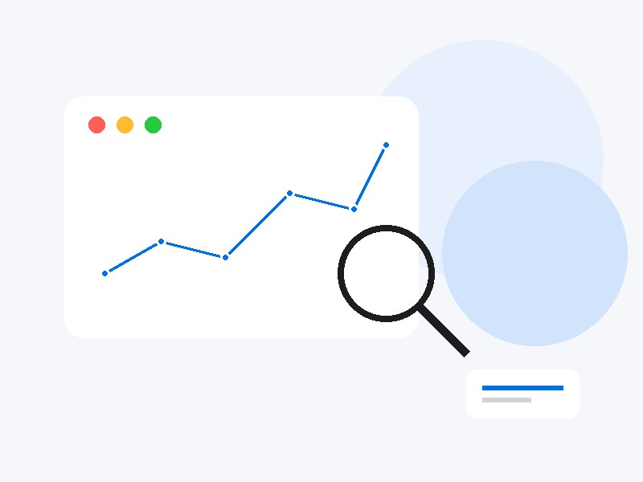
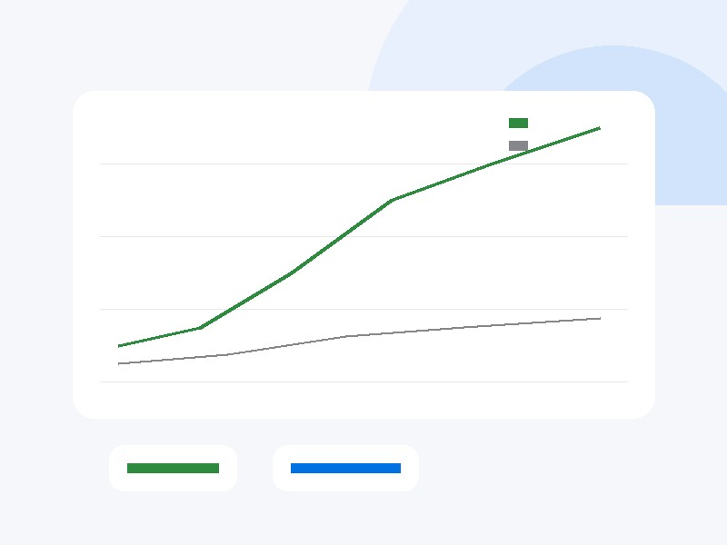
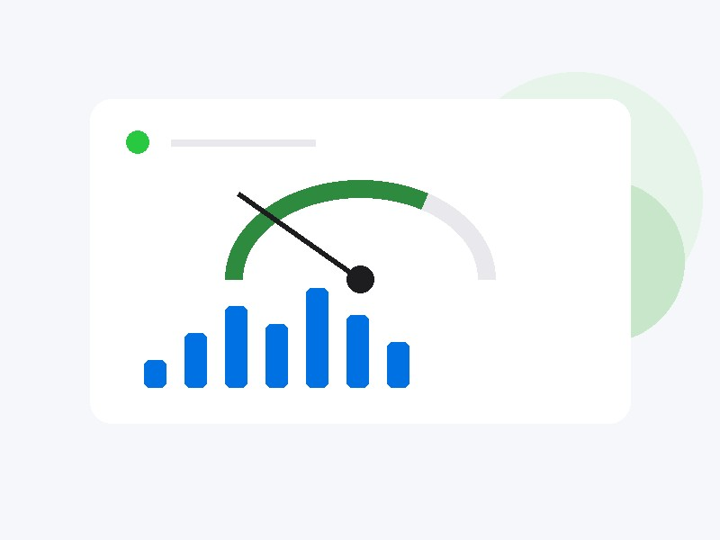

“我们见过太多优秀的策略团队，因为回测环境与实盘偏差超过30%，上线首日就触发风控——这不是能力的差距，是基础设施的缺失。”—— TzQuant 创始人
仅头部市场的量化私募管理规模就已突破 ~$1.8T，过去五年复合增长率超过 25%。量化投资正从边缘策略走向机构主流配置。
专业投资者真正需要的，不是更多工具，而是一个将数据、研究、执行与风控融为一体的一站式量化基础设施。
从数据到执行，每个环节都经过精心设计。
高质量行情、财务与另类数据
多因子模型与 AI 策略研究
Tick 级高精度回测引擎
低延迟实盘交易接入
事前事中事后全链路风控体系，守护每一笔交易的安全。
聚焦专业投资者需求，TzQuant 在数据、执行与风控上形成差异化定位。
我们不认为功能越多越好。量化机构真正的痛点是“闭环”——策略在哪里研究，就在哪里回测，就在哪里执行。所以我们没有选择功能堆砌，而是选择了最难的路：自研低延迟交易核心和Tick级回测引擎。
| 平台 | AI Agent | 开放研究 | 社区协作 | 策略执行 |
|---|---|---|---|---|
| WorldQuant BRAIN | △ | △ | ✓ | ✓ |
| QuantConnect | ✗ | ✗ | ✓ | ✓ |
| Numerai | △ | ✓ | ✓ | ✗ |
| JoinQuant | ✗ | ✗ | ✓ | ✓ |
| RiceQuant | ✗ | ✗ | ✓ | ✓ |
| Hugging Face | ✓ | ✓ | ✓ | ✗ |
| TZQuant | ✓✓ | ✓✓ | ✓✓ | ✓ |
相比上述平台，TzQuant 从机构客户需求出发，将研究、回测、实盘执行与全链路风控深度融合，并以低延迟交易核心和开放 API 构建可扩展的量化基础设施。
多个结构性变化正在推动量化基础设施进入新阶段
大模型与自动化工具正在显著降低策略开发门槛，提高研究效率，机构可以更快地生成、测试和优化策略。
机构正在从单一股票策略扩展至股票、期货、期权、加密资产和跨市场套利，多资产环境使系统复杂度显著提升。
机构已经从单一工具需求，转向统一、稳定、可扩展的量化生产环境，需要覆盖研究、回测、执行和风控的完整工作流。
云计算、实时数据接口、交易API以及计算资源成本下降，使机构级量化平台具备成熟落地条件。
市场正在从“量化工具时代”进入“量化操作系统时代”
TzQuant 希望成为下一代量化机构基础设施。
已有 50+ 家机构客户，累计运行 500+ 个策略模型，其中 37 个已进入实盘交易。
“以前一个策略从回测到实盘需要 3 周，现在 3 天。TzQuant 让我们敢做更高频的策略了。”—— 某头部量化私募合伙人
从研究、回测到实盘执行，构建统一量化生产环境

统一研究环境，加速 Alpha 发现与策略构建。

真实市场建模，降低回测与实盘偏差。

低延迟执行与实时风控的一体化交易环境。
单点功能都可以被模仿，但将研究、执行与生态融为一体的原生架构，需要从第一天就重写底层逻辑。
研究、回测、实盘、风控一体化，避免数据与策略在多个工具间割裂流转。
自研交易核心，订单处理延迟低于毫秒级，支持高频与算法交易场景。
Tick 级数据与真实交易成本建模，显著降低策略上线后的收益偏离。
标准化 API 与插件体系，让客户与第三方开发者共同扩展平台能力。
“这四件事，单做任何一件都不算难。但融于一套原生架构，意味着研究员不再做数据搬运工，策略从回测到实盘无需重写第二遍——我们为此重构了18个月。这不是功能堆砌，是量化基础设施该有的样子。”
核心平台上线，获得 50+ 机构客户，验证产品与商业模式。
拓展数据源与券商接入，覆盖更多资产类别，实现 SaaS 收入规模化。
开放平台与策略商城，引入第三方开发者，形成量化策略交易生态。
拓展港股、美股与衍生品市场，服务亚太地区的专业投资者。
SaaS 订阅覆盖基础，交易分成与客户共成长，定制开发服务头部——三层收入结构，层层递进。
按模块与数据量分级订阅，覆盖研究、回测与基础交易需求。
基于实盘交易规模收取技术服务费，与客户增长深度绑定。
为大型机构提供私有化部署、策略定制与系统对接服务。
中国量化交易技术服务市场总规模
专业服务型量化平台可服务市场
未来 3 年目标市场份额
连续创业者，推动 TzQuant 从实验室走向机构客户。
10+ 年系统架构经验，主导 AI 量化平台与交易核心落地。
前 500 强 M&A 总监，主导融资与生态合作。
如果您对 TzQuant 感兴趣，欢迎与我们联系。
18–24 个月
融资后达到：